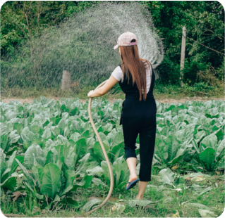

농담 NEWS  농사, 힘들지만 뿌듯해요 2021년 8월 16일 김농담 농부 요즘 들어 창농을 시작하는 사람들이 부쩍 많아졌어요. 저도 이제 농사한 지 1년 정도 되었네요. 농사라는 게 처음에 시작할 때 초기 자금이 너무 많이 들잖아요. 그 만큼 농사를 시작한다는 것이 쉬운 결정이 아닌데 농담을 알게 되어서 순조롭게 창농을 시작할 수 있었어요. 농사가 힘들긴 하지만 나날이 자라는 작물들을 보면 뿌듯하답니다. 농사하길 참 잘했다는 생각이 들어요.
공지사항 [공지] 농담 개인정보처리방침(2021.8.20) 개정... [공지] 8월 후기 이벤트 안내 [공지] 농담 개인정보처리방침(2021.2.20) 개정... 농기계 구입할 때 꼭 확인해야 할 10가지! [공지] 농지 거래 관련 정책 개정 안내 [공지] 창농 교육 및 지원 제도 안내 [공지] 농담 오픈 이벤트 안내